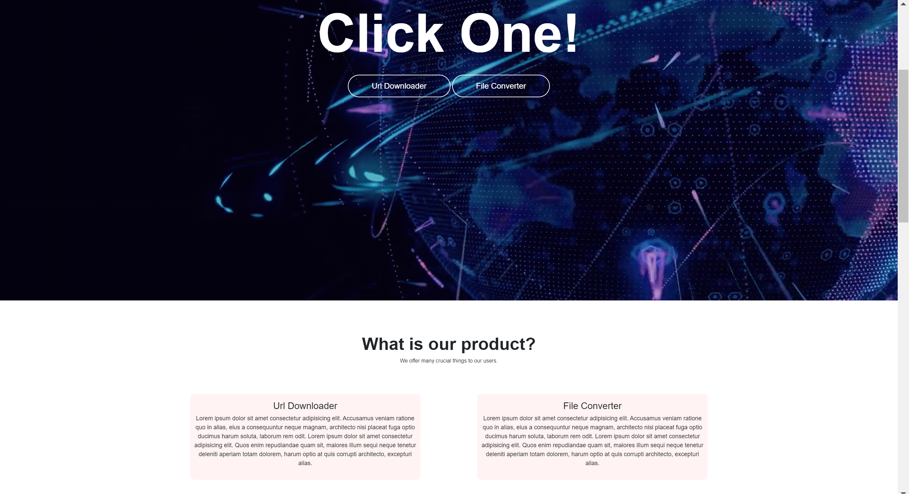

Peer Review 2
Waghchoure, Aman:
Page to Review:
Checklist:
- The above image does lead to the page to be reviewed when clicked.
- None of the file or folder names contain spaces or upper-case letters.
- Design Properties:
- The page's text is clear and easy to read, due to nice contrast between font colors and the background. Even though the background is animated, due to design principles followed, it is very easy to read. All font sizes are big enough to clearly read.
- CSS is used properly throughout the site.
- All of the CRAP 'rules' are followed on the site. As stated above, there is sufficient contrast between different elements. Due to the designers use of proximity, it is easy to tell the relationship between different elements. Alignment and Repetition is used consistently throughout, making all pages flow nicely. The repetition of the animated backgrounds throughout is a nice touch. Overall, due to effective use of CRAP principles, the site is aesthetically pleasing and easy to navigate.
- The pages do include a consistent header, footer, and main section.
- The header includes the clickable logo and the navigation bar. However, the title of the site is not displayed. The text on the home page just says 'Click One!'
- The home page's h1 is the text 'Click One!' and 'What is our product?'. There are no h2's in the code, though I assume the latter h1 was supposed to be the h2.
- The site does not have a brand tagline.
- The footer does not include a menu for the user's pages, but there are correct CSS and HTML validation links.
- This site does cover the requirements of the assignment.
Summary:
Overall a very well designed website, it looks professional and is fun to look at!! The only suggestion I have is to include the site's title on the pages, instead of just going straight to the page's name. But really nicely done, I love the animated backgrounds!